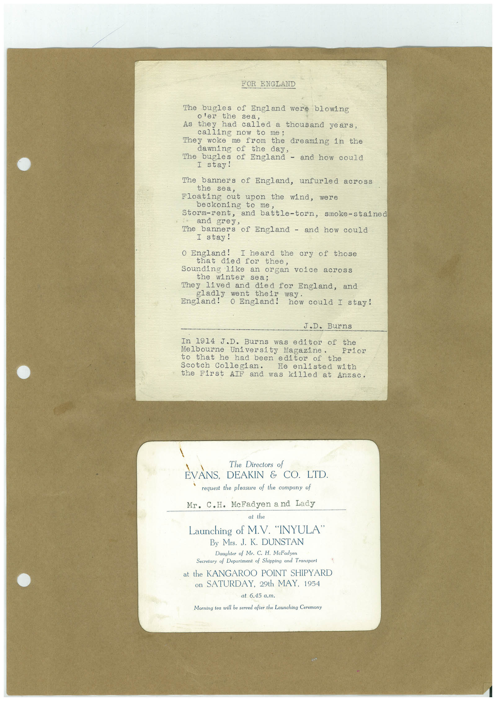

Book 1 · scan 148


Description
Transcription
Context
Review notes
Compare the machine draft with the scan. Handwriting and names need human review.
Artifacts
Edit the artifacts field in this note’s frontmatter to change these records. This summary is generated.
B01-S148-A01 — Typed document & Printed material — Book 1, scan 148
Types: Typed document, Printed material
Scope: Whole scanned page; individual items can be split out during review.
Caption: Not mapped yet.
Caption source: Not recorded yet.
Caption status: unmapped
Machine transcription
FOR ENGLAND The bugles of England were blowing o'er the sea, As they had called a thousand years, calling now to me; They woke me from the dreaming in the dawning of the day, The bugles of England - and how could I stay! The banners of England, unfurled across the sea, Floating out upon the wind, were beckoning to me Storm-rent, and battle-torn, smoke-stained and grey, The banners of England - and how could I stay! O England! I heard the cry of those that died for thee, Sounding like an organ voice across the winter sea; They lived and died for England, and gladly went their way. England! O England! how could I stay! J.D. Burns In 1914 J.D. Burns was editor of the Melbourne University Magazine. to that he had been editor Scotch Collegian. He enlisted with the First AIF and was killed at Anzac. The Directors of EVANS, DEAKIN & CO. LTD. request the pleasure of the company of Mr. C.H. McFadyen a nd Lady at the Launching of M.V. "INYULA" By Mrs. J. K. DUNSTAN Daughter of Mr. C. H. McFadyen Secretary of Department of Shipping and Transport at the KANGAROO POINT SHIPYARD on SATURDAY, 29th MAY, 1954 at 6.45 a.m. Morning tea will be served after the Launching Ceremony